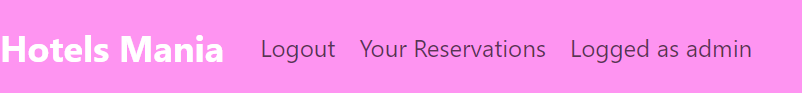
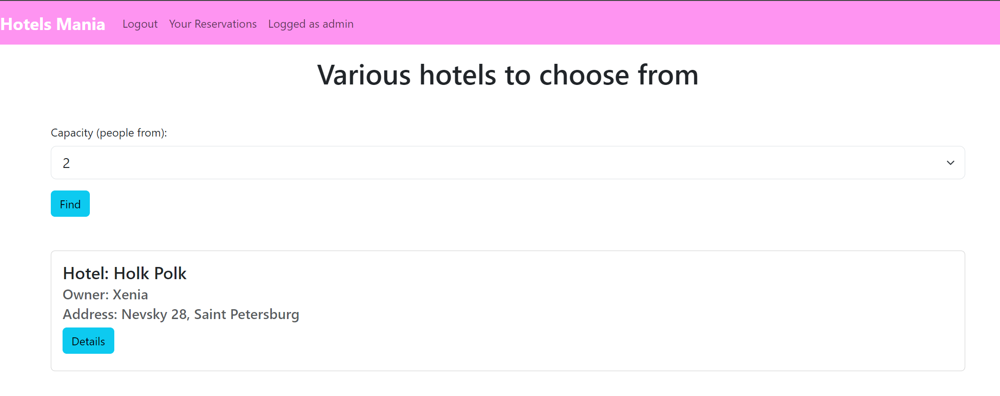

Главная страница
Главная страница представляет собой список отелей, однако любая активность при этом заблокирована.

Вход
После входа на сайт хэдер у сайта сменяется, появляется имя пользователя и вкладка с возможностью просмотра его бронирований:

Поиск
После входа на главной странице можно настроить фильтр - поиск по вместимости номеров. Для этого выбирается количество из выпадающего списка, и затем выводятся только те варианты, которые содержат вместимость ОТ такого количества.
